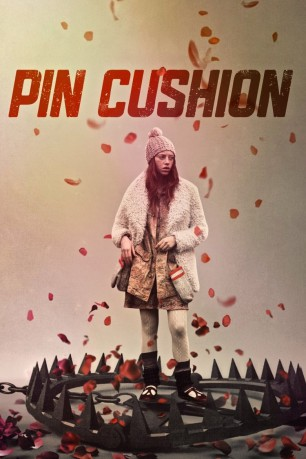

#10109 Pin Cushion
 
 IMDB-Wertung: 6.4 / 10
IMDB-Wertung: 6.4 / 10  Metascore: 74
Metascore: 74 
Iona und ihre Mutter Lyn waren beide immer Außenseiterinnen und deshalb die besten Freundinnen. Nach einem Umzug in eine andere Stadt, ändert sich jedoch alles. Teenager Iona findet einen Freund und eine Mädels-Clique. Ihre Freundinnen meinen es jedoch alles andere als gut mit ihr und auch Mutter Lyn hat Probleme mit den Nachbarn. Die beiden flüchten sich immer mehr in ihre Phantasie und so nimmt das Unheil seinen Lauf...
Jahr: 2017
Dauer: 81 Minuten
FSK: 16
Land: England Studio: I-On New MediaTonspuren: DTS - ,
Untertitel:
Auflösung: 1080p (1920x1036) Größe: 4966 MB
Genre: Drama
Regisseur: Deborah Haywood
Drehbuch: Deborah Haywood
Soundtrack: Natalie Holt
Darsteller:
- Lily Newmark als Iona
 Joanna Scanlan als Lyn
Joanna Scanlan als Lyn- Bethany Antonia als Chelsea
- Saskia Paige Martin als Stacie
- Charlie Frances als Dwayne
- Isy Suttie als Anne
 John Albasiny als Mr. Waters
John Albasiny als Mr. Waters- Phil Tillott als Psychic audience member
- Loris Scarpa als Daz
- Sacha Cordy-Nice als Keeley
- Sophia Tuckey als Peggy
 John Henshaw als Percy
John Henshaw als Percy- Lennon Bradley als Sam
- Aury Wayne als Sicko
- Pamela DeAbreu als Friendship group member
- Jacob Lee als Jordan
Datei: X:\2017(N-Z)\Pin Cushion (2017, FSK16, 1920x1036).mkv seit 04.12.2018
Festplatte: HD 2017(A-Z)-2018(A-F)
 Es gibt insgesamt 170 Filme in der Gruppe '2017(N-Z)'
Es gibt insgesamt 170 Filme in der Gruppe '2017(N-Z)'